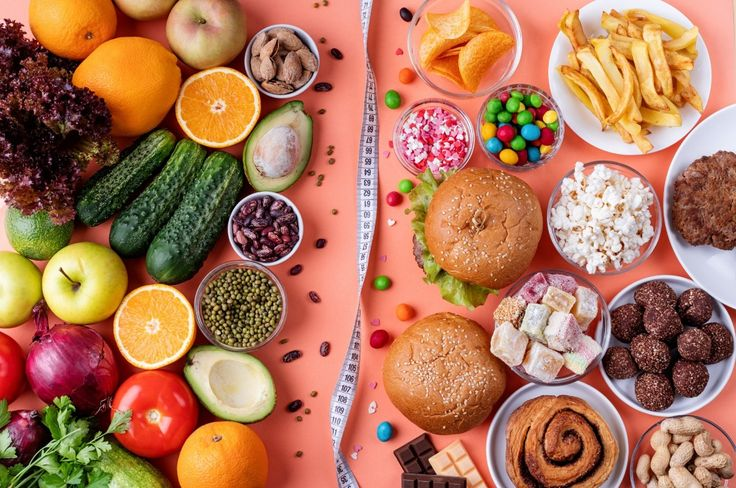
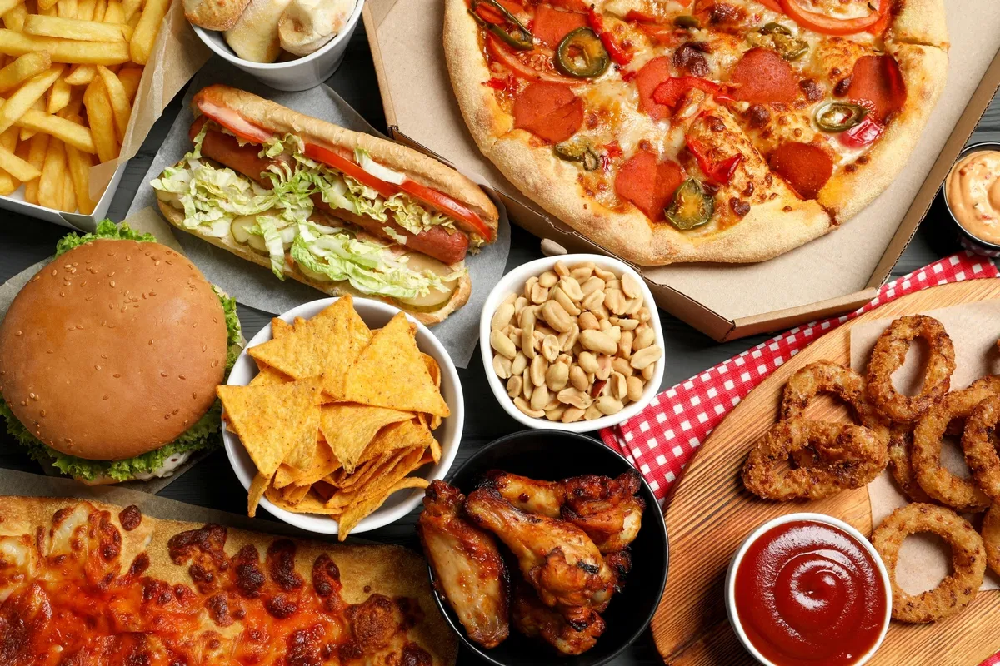
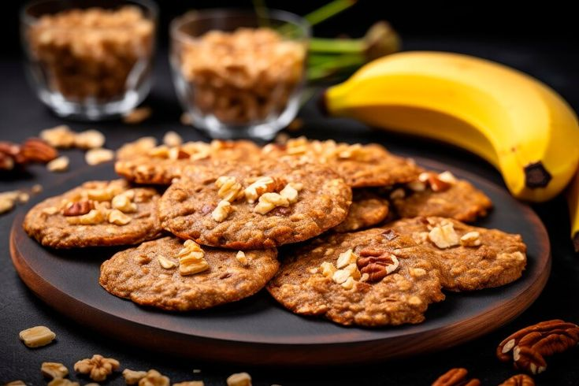
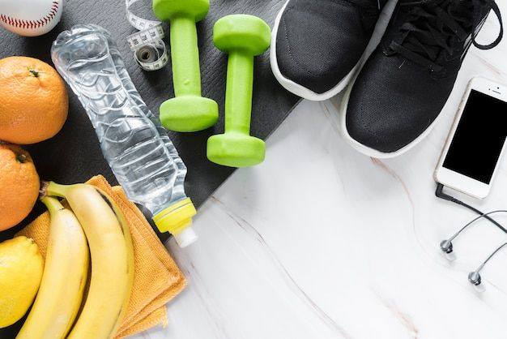
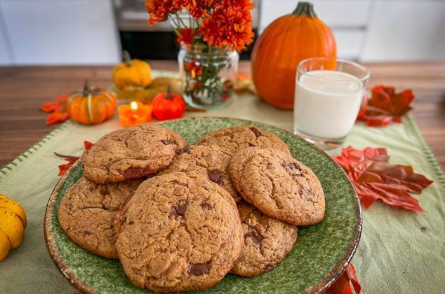
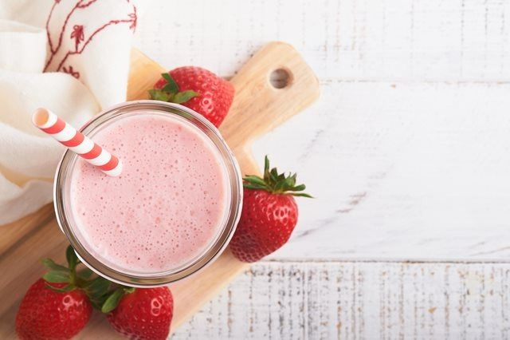
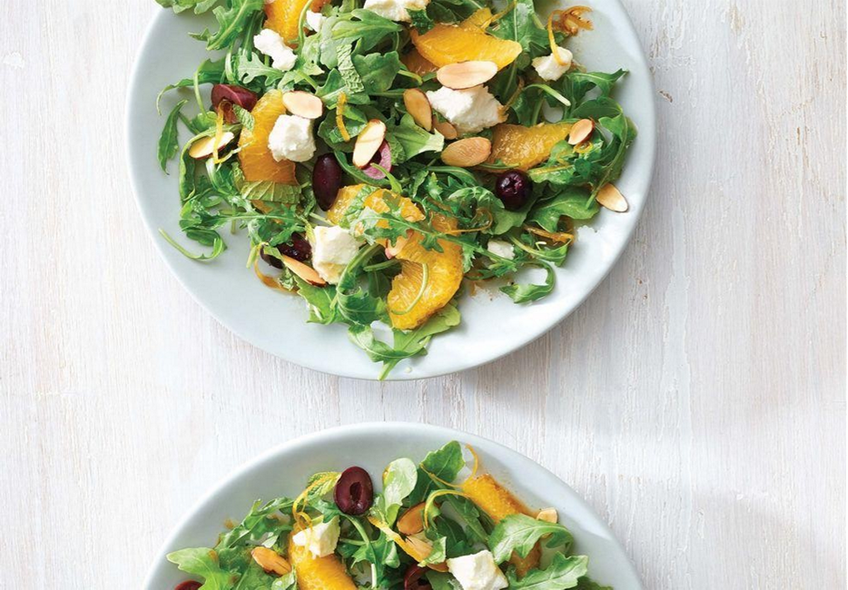

Elegir una dieta antiinflamatoria es clave para prevenir y combatir la inflamación que, a la larga, puede derivar en la aparición de enfermedades crónicas como la artritis, el asma o la diabetes, patologías cardíacas o cáncer. A continuación, vamos a ver cuáles son los alimentos antiinflamatorios que son aliados para tener una buena salud y los que se deben evitar.

La alimentación antiinflamatoria se basa en la ingesta de nutrientes que ayudan a evitar procesos inflamatorios en el organismo. Esto no solo engloba la típica hinchazón, sino también las inflamaciones crónicas originadas por enfermedades más graves como la diabetes, la fibromialgia o incluso el cáncer.
Seguir una dieta antiinflamatoria es una forma de alimentación recomendable para prevenir diferentes patologías y alteraciones como son las siguientes:
• 💪 Dolor crónicosi se padecen dolores crónicos en las articulaciones, como la artritis, la dieta antiinflamatoria puede ayudar a reducir la inflamación y aliviar las molestias.
• ❤️ Enfermedades cardíacas la inflamación crónica puede contribuir a generar enfermedades cardíacas y la dieta ayuda reducir el riesgo.
• 🥦 Problemas digestivos la inflamación en el tracto digestivo puede causar problemas como el sobrecrecimiento bacteriano del intestino delgado (SIBO), el síndrome del intestino irritable y la colitis ulcerosa.
• ⚖️ Sobrepeso u obesidad el exceso de peso produce inflamación en el cuerpo y consumir alimentos antiinflamatorios puede ayudar a reducir el peso y mejorar la salud.
• 🌸 Problemas de piel la inflamación también se refleja en la piel, con problemas como el acné y el eccema.
• 🧘 Depresión y ansiedaduna inflamación cronificada se ha relacionado también con problemas psicológicos, como la depresión y la ansiedad y, en estos casos, la dieta antiinflamatoria favorece la salud mental.
Existen varios alimentos que se consideran antiinflamatorios por su aporte de nutrientes y compuestos específicos:
1.Frutas y verduras piña, manzana, papaya, cerezas, frutas cítricas (naranja y limón), frutos rojos, espinacas, brócoli, apio, entre otras.
2.🐟Pescado azul: especialmente el salmón, el atún y las sardinas, ricos en ácidos grasos omega-3.
3.🥜Frutos secos y semillas: pistachos, nueces, almendras y semillas de chía y lino.
4.🍵Té verde: es rico en antioxidantes y catequinas, compuestos antiinflamatorios.
5.🌿Especias:jengibre, cúrcuma y canela.
6.🦠Probióticos:como los que contienen el yogur y el kéfir, que ayudan a equilibrar la flora intestinal y reducir la inflamación.
✅ Es importante incluir este conjunto de alimentos cuyos efectos antiinflamatorios contribuyen a una dieta sana, nutritiva y variada.

Tan importante es saber qué comer en una dieta antiinflamatoria como tener claro qué productos evitar para prevenir la inflamación a corto y a largo plazo, como serían estos:
•🥩Alimentos procesados: embutidos, productos precocinados y alimentos con aditivos artificiales.
•🍩Alimentos fritos y procesados: • Alimentos fritos y procesados:
•🍬Azúcar y alimentos con azúcares añadidos.
•🍔Grasas saturadas: presentes en los productos ultraprocesados y en las carnes rojas.
•🍞Alimentos refinados: : pan blanco, arroz blanco y pasta refinada.
•🍷Alcohol: su consumo aumenta la inflamación y el riesgo de enfermedades crónicas.
•☕Cafeína: tomarla en exceso también contribuye a inflamar el cuerpo.
Esto no significa que se deban eliminar estos productos y alimentos por completo, la idea es reducir y evitar su consumo habitual para beneficiar la salud y, a la vez, adquirir buenos hábitos. ¡Todo es cuestión de equilibrio!

Estas son unas galletas de avena muy saludables y fáciles, ideales…
24/05/2025 Leer más
La dieta para deportistas de alto rendimiento juega un papel crucial para…
24/05/2025 Leer másElegir una dieta antiinflamatoria es clave para prevenir y combatir la inflamación que…
24/05/2025 Leer más
Estas galletas de calabaza se han vuelto una de mis recetas favoritas. Te prometo que te van a encantar…
24/05/2025 Leer más
Este smoothie es una excelente manera de comenzar el…
24/05/2025 Leer más
Esta ensalada con naranja, queso de cabra y pistachos, aportan…
24/05/2025 Leer más